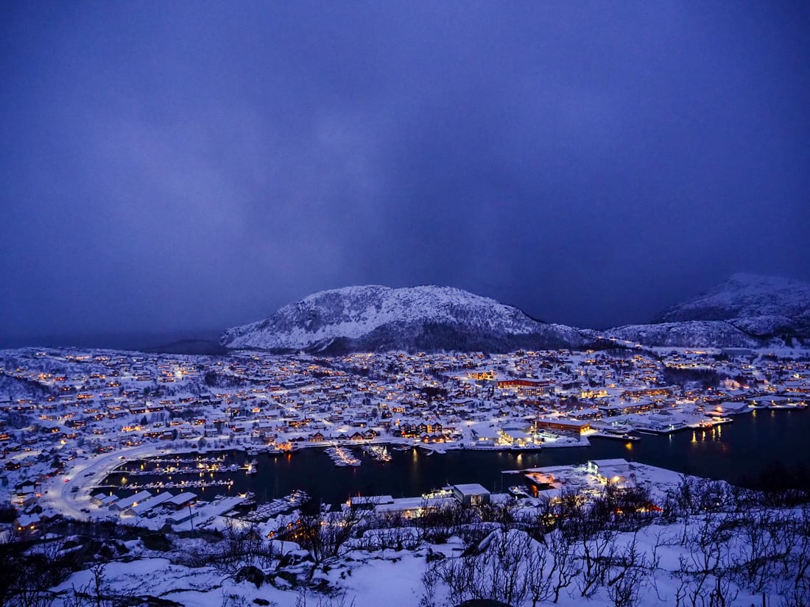
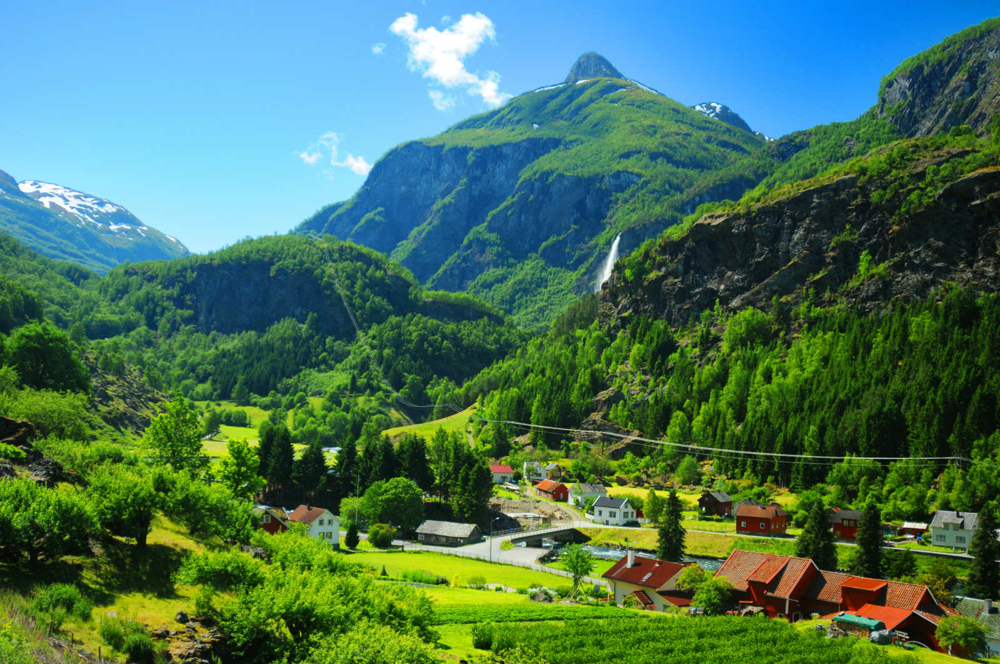
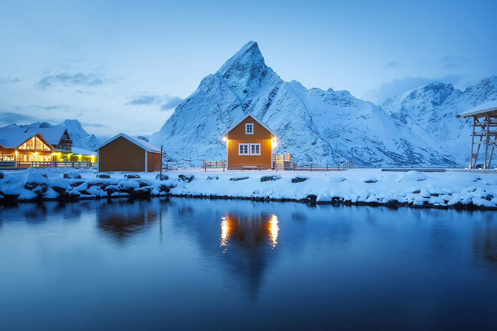
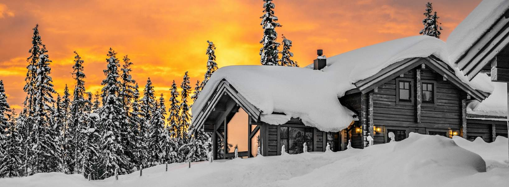

Velkommen til Norge

Geography and Nature
Norway is world-renowned for its dramatic glacier-carved fjords, steep mountains, and rugged coastline. Located in Scandinavia, its northern reaches extend into the Arctic Circle, offering the Midnight Sun and Northern Lights. The "Right to Roam" allows visitors to explore this pristine wilderness, from deep valleys to massive glaciers.
Society and Economy
Norway is a prosperous parliamentary democracy consistently ranking among the world's happiest nations. It is a global leader in sustainability, notably having the highest per-capita electric vehicle ownership. With a rich Viking heritage, its modern cities like Oslo and Bergen blend cutting-edge architecture with traditional maritime history and culture.

basic information

Viking Heritage and Historical Identity
The Viking Era: From approximately 800 CE to 1050 CE, Norway was the heart of the Viking Age, a period defined by seafaring expansion, trade, and legendary raids.
Skilled Explorers: Contrary to simple stereotypes of raiders, Vikings were sophisticated craftsmen, farmers, and expert shipbuilders who reached as far as North America and the Middle East.
Royal Origins: Norway was first united as a single kingdom under Harald Fairhair, a Viking warrior king.
Cultural Legacy: This era's influence remains visible today through preserved Viking ships like the Oseberg and Gokstad, housed in specialized museums.
Economic Wealth and Sustainability Leadership
Sovereign Wealth: Norway is one of the world's richest nations, fueled by its status as a top exporter of North Sea oil and natural gas.
Oil-Backed Welfare: Profits from natural resources fund the Government Pension Fund Global, the world's largest sovereign wealth fund, ensuring a robust social security and education system.
Green Energy Pioneer: Despite its oil wealth, Norway leads the world in renewable energy; over 98% of its domestic electricity is generated from hydropower.
EV Revolution: The nation has the highest per-capita ownership of electric vehicles globally, supported by aggressive government incentives to become carbon neutral by 2030.

Oslo (The Vibrant Capital)
.jpg)
The Oslo Opera House (Operahuset)
A masterpiece of modern architecture, the Oslo Opera House is designed to resemble a massive glacier rising directly from the fjord. Its iconic white Italian marble roof slopes down to the water’s edge, creating a vast public plaza that invites visitors to walk to the very top for panoramic city views. This award-winning structure isn't just for high culture; it reflects the Norwegian "Right to Roam" by making architectural beauty accessible to everyone. Inside, the oak-lined foyers and world-class acoustics host the Norwegian National Opera and Ballet, serving as the crown jewel of Oslo's revitalised waterfront.
Akershus Fortress (Akershus Festning)
Contrasting the city's modern glass towers is the Akershus Fortress, a 13th-century medieval castle that has protected Oslo for over 700 years. Originally built to defend the city and serve as a royal residence, the fortress has survived numerous sieges and now stands as a peaceful park and historical monument. Walking through its ancient stone ramparts and lush green grounds offers a quiet retreat into Norway’s military history. Visitors can explore the Royal Mausoleum, the Resistance Museum, and enjoy some of the best sunset views over the harbour and the Aker Brygge district.
.webp)
Bergen (The Gateway to the Fjords)
.jpeg)
Bryggen (The Hanseatic Wharf)
Bryggen is the iconic heart of Bergen and a UNESCO World Heritage site featuring a row of colourful, pointed-gable wooden warehouses. Established in the 14th century as a key trading hub for the Hanseatic League, these narrow alleys now house boutique shops, artisan workshops, and hidden galleries. Walking through the creaky timber passages feels like stepping back into the Middle Ages. Despite devastating fires over the centuries, the wharf has been meticulously rebuilt using traditional methods, preserving its unique architectural character as one of Northern Europe's most significant historical maritime landmarks.
Mount Fløyen and the Fløibanen Funicular
For the ultimate panoramic view of the "City of Seven Mountains," a ride on the Fløibanen funicular is essential. In just six minutes, the glass-roofed cable car whisks visitors from the city centre to the summit of Mount Fløyen, 320 metres above sea level. From the viewing platform, you can see the entire Bergen peninsula, the surrounding fjords, and the North Sea. The mountaintop is a gateway to vast hiking trails, hidden forest lakes, and a charming café, offering a perfect blend of high-altitude nature and easy urban accessibility.

Trondheim (The Historical Heart)
.jpg)
Nidaros Cathedral (Nidarosdomen)
As the northernmost Gothic cathedral in the world, Nidaros Cathedral is the spiritual heart of Norway and the traditional site of Norwegian royal coronations. Built over the burial site of Saint Olav, the Viking king who Christianised the nation, this architectural masterpiece features an incredibly detailed west front adorned with dozens of stone sculptures. Its soaring vaulted ceilings, magnificent stained glass, and the ornate shrine of St. Olav make it a profound pilgrimage site. Walking through its dark, cool stone interior offers a powerful connection to the medieval religious power that shaped Scandinavia.
Bakklandet and the Old Town Bridge
Bakklandet is Trondheim’s most picturesque neighbourhood, a charming district of brightly coloured 17th-century wooden houses lining narrow cobblestone streets. Once a working-class suburb, it is now a vibrant cultural hub filled with independent boutiques and cozy riverside cafés. The area is best accessed via the Old Town Bridge (Gamle Bybro), often called the "Portal of Happiness." From the bridge, you get the iconic view of the ancient wooden wharves reflecting in the Nidelva River. It is the perfect place to experience a slow-paced Norwegian morning and the city's unique historical character.

Tromsø (The Arctic Gateway)
.jpg)
The Arctic Cathedral (Ishavskatedralen)
The Arctic Cathedral is Tromsø’s most iconic landmark, a stunning piece of modern architecture designed to resemble towering ice floes or a traditional Sámi tent. Completed in 1965, its striking white triangular structure and massive stained-glass eastern wall dominate the city's skyline. Inside, the cathedral is renowned for its incredible acoustics, frequently hosting "Midnight Sun" and "Northern Lights" concerts that fill the minimalist space with ethereal music. Whether viewed from across the Tromsø Bridge or experienced during a candlelit winter performance, it stands as a breathtaking symbol of the Arctic’s spiritual and natural majesty.
Fjellheisen Aerial Tramway
For the ultimate panoramic view of the Arctic Gateway, a ride on the Fjellheisen aerial tramway is indispensable. In just four minutes, the cable car whisks visitors to the ledge of Mount Storsteinen, 421 metres above sea level. From the viewing platform, you can see the entire island city of Tromsø, the surrounding fjords, and the jagged peaks of the Kvaløya mountains. In winter, it is a premier spot for witnessing the Northern Lights away from city glow; in summer, it offers a front-row seat to the Midnight Sun, providing a truly surreal high-latitude experience.